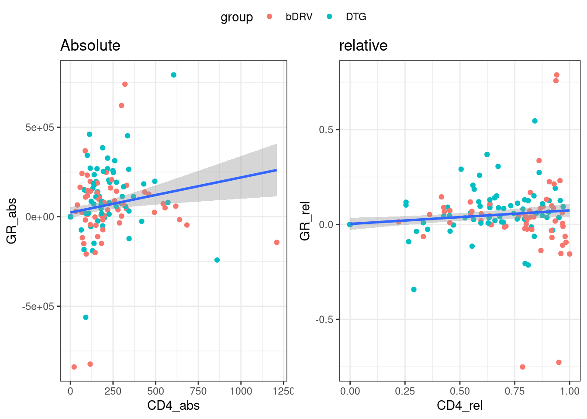
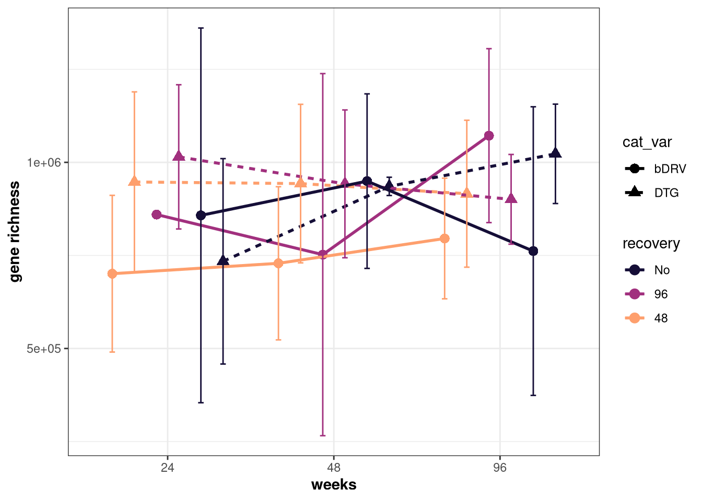
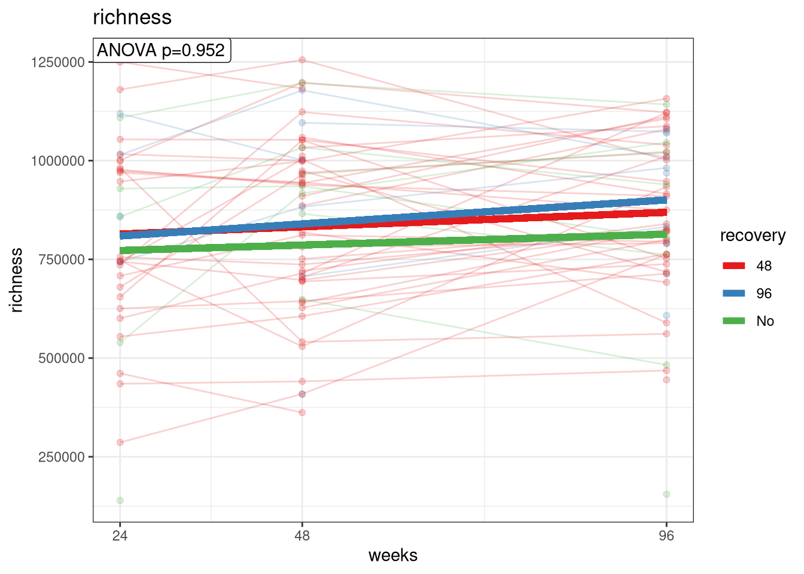
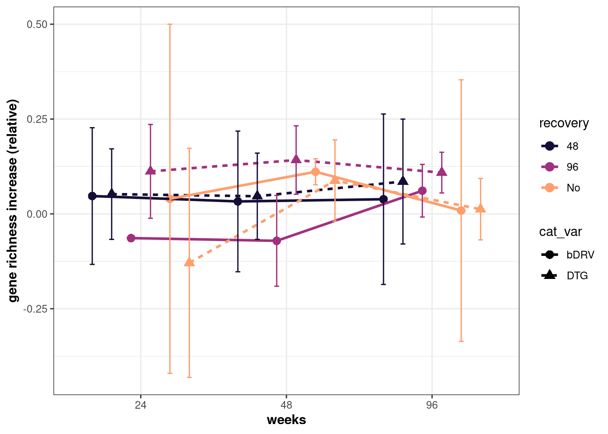
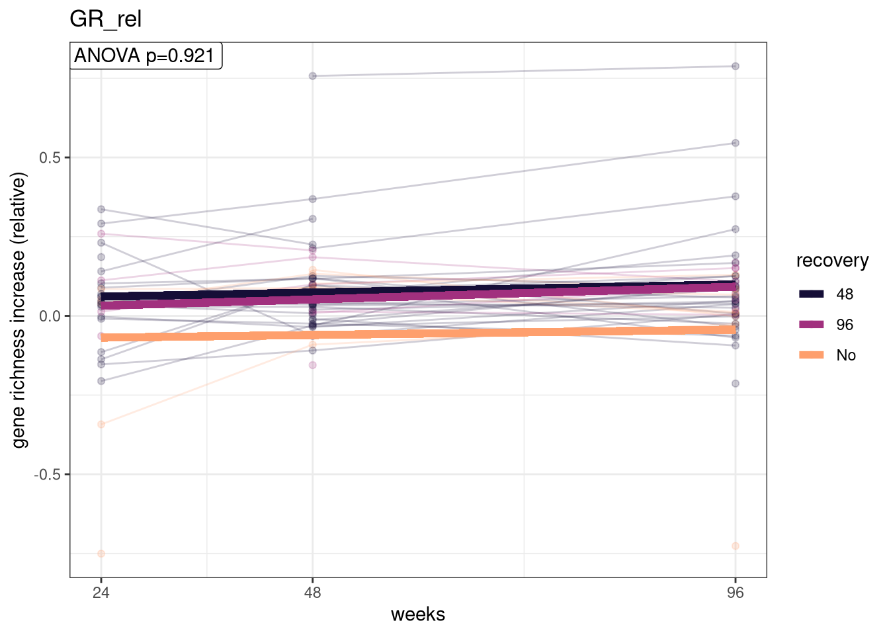
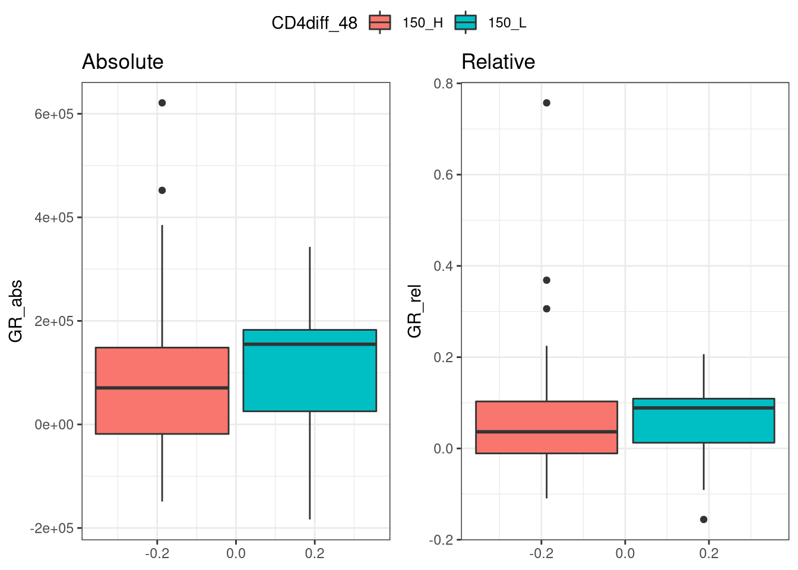
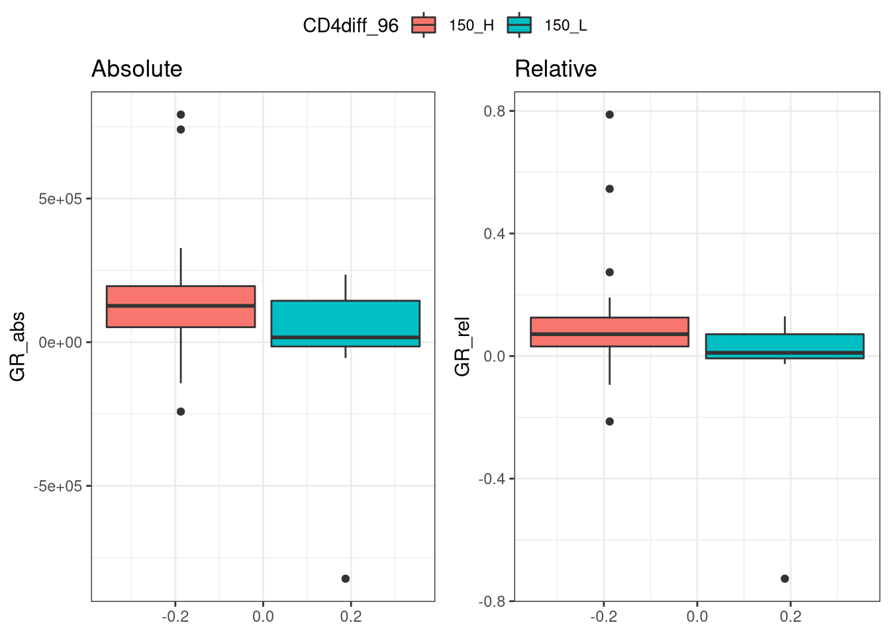

Gene Richness vs CD4
Carlos Blazquez
11/11/2022
Last updated: 2022-11-29
Checks: 6 1
Knit directory: advanz4/
This reproducible R Markdown analysis was created with workflowr (version 1.7.0). The Checks tab describes the reproducibility checks that were applied when the results were created. The Past versions tab lists the development history.
The R Markdown file has unstaged changes. To know which version of
the R Markdown file created these results, you’ll want to first commit
it to the Git repo. If you’re still working on the analysis, you can
ignore this warning. When you’re finished, you can run
wflow_publish to commit the R Markdown file and build the
HTML.
Great job! The global environment was empty. Objects defined in the global environment can affect the analysis in your R Markdown file in unknown ways. For reproduciblity it’s best to always run the code in an empty environment.
The command set.seed(20211203) was run prior to running
the code in the R Markdown file. Setting a seed ensures that any results
that rely on randomness, e.g. subsampling or permutations, are
reproducible.
Great job! Recording the operating system, R version, and package versions is critical for reproducibility.
Nice! There were no cached chunks for this analysis, so you can be confident that you successfully produced the results during this run.
Great job! Using relative paths to the files within your workflowr project makes it easier to run your code on other machines.
Great! You are using Git for version control. Tracking code development and connecting the code version to the results is critical for reproducibility.
The results in this page were generated with repository version f65ff40. See the Past versions tab to see a history of the changes made to the R Markdown and HTML files.
Note that you need to be careful to ensure that all relevant files for
the analysis have been committed to Git prior to generating the results
(you can use wflow_publish or
wflow_git_commit). workflowr only checks the R Markdown
file, but you know if there are other scripts or data files that it
depends on. Below is the status of the Git repository when the results
were generated:
Ignored files:
Ignored: .RData
Ignored: .Rhistory
Ignored: .Rproj.user/
Ignored: Metadata/MetadataManagement/Old_Metadata/
Ignored: analysis/.Rhistory
Ignored: analysis/010_Basic_Report_cache/
Ignored: analysis/420_Taxonomy_DA_cache/
Ignored: analysis/510_Function_DA_cache/
Ignored: data/mre.rds
Unstaged changes:
Modified: analysis/315_GeneRichness_vs_CD4.Rmd
Note that any generated files, e.g. HTML, png, CSS, etc., are not included in this status report because it is ok for generated content to have uncommitted changes.
These are the previous versions of the repository in which changes were
made to the R Markdown
(analysis/315_GeneRichness_vs_CD4.Rmd) and HTML
(docs/315_GeneRichness_vs_CD4.html) files. If you’ve
configured a remote Git repository (see ?wflow_git_remote),
click on the hyperlinks in the table below to view the files as they
were in that past version.
| File | Version | Author | Date | Message |
|---|---|---|---|---|
| Rmd | f65ff40 | cblazquez-irsi | 2022-11-28 | Forgot to render html |
| html | f65ff40 | cblazquez-irsi | 2022-11-28 | Forgot to render html |
| Rmd | 27df3cb | cblazquez-irsi | 2022-11-28 | Added comparisons and lmms of GR per recovery |
| html | 27df3cb | cblazquez-irsi | 2022-11-28 | Added comparisons and lmms of GR per recovery |
| Rmd | 6778971 | cblazquez-irsi | 2022-11-28 | Added comparisons and lmms of GR per recovery |
| html | 6778971 | cblazquez-irsi | 2022-11-28 | Added comparisons and lmms of GR per recovery |
| html | a0f19e2 | cblazquez | 2022-11-25 | moved files to code |
| Rmd | 074d657 | cblazquez-irsi | 2022-11-25 | Added comparisons in GR and CD4 |
| html | 074d657 | cblazquez-irsi | 2022-11-25 | Added comparisons in GR and CD4 |
| Rmd | e39741c | Marc Noguera-Julian | 2022-11-23 | update |
| Rmd | a6ac6e9 | cblazquez-irsi | 2022-11-23 | Merge branch ‘main’ of https://github.com/MicrobialGenomics/advanz4 |
| Rmd | 649e4c5 | cblazquez-irsi | 2022-11-23 | Added relative deltas in GR and CD4 |
| html | 649e4c5 | cblazquez-irsi | 2022-11-23 | Added relative deltas in GR and CD4 |
| Rmd | 042b81e | Marc Noguera-Julian | 2022-11-18 | Merge branch ‘main’ of https://github.com/MicrobialGenomics/advanz4 |
| Rmd | 8917295 | Marc Noguera-Julian | 2022-11-18 | Update 315_GeneRichness_vs_CD4.Rmd |
| Rmd | f0e92e1 | cblazquez-irsi | 2022-11-16 | Started with baseline distributions of CD4 and GR |
| html | f0e92e1 | cblazquez-irsi | 2022-11-16 | Started with baseline distributions of CD4 and GR |
| Rmd | df53555 | Marc Noguera-Julian | 2022-11-11 | Update 315_GeneRichness_vs_CD4.Rmd |
| Rmd | 86d7c3a | Marc Noguera-Julian | 2022-11-11 | Create 315_GeneRichness_vs_CD4.Rmd |
metadata <-
here::here("Metadata") %>%
file.info(list.files(., full.names = T)) %>%
rownames() %>%
magrittr::extract(str_detect(.,"clean_metadata")) %>%
sort(decreasing = T) %>%
magrittr::extract(1L) %>%
read.csv() %>%
column_to_rownames("SampleID") %>%
mutate(SampleID = rownames(.))
mymre <- aws.s3::s3readRDS(bucket = "mistral-wp6-advanz4",object = "metagenome/WMGS/MREObject.rds", region = "eu-west-1")Gene Richness vs CD4
In this analysis we are interested in the relationship between CD4/CD4 recovery and gene richness. For that, several questions are of importance.
CD4 baseline distribution
We already know that CD4 mean(sd) is similar for DTG/DRVr groups, but we have not checked the distribution. Is it unimodal or bimodal? a density plot should help.
basal_df <-
metadata %>%
# dplyr::mutate(delta_cd4 = CD4[time_point == 48] - CD4[time_point == 0])
dplyr::filter(time_point == 0) %>%
dplyr::select(SampleID, group, CD4)
median_df <- basal_df %>%
dplyr::group_by(group) %>%
summarise(med = median(CD4))
peak_finder <-
function(density, goal = "max",keep = F) {
### Let's define this function heere but we'll use it later
stopifnot("goal can only be either local maxima (use: 'max') or local minima (use 'min)" = goal %in% c("min","max"))
val <- case_when(goal == "max" ~ -2,
goal == "min" ~ 2)
res <-
density %>%
purrr::keep(names(.) %in% c("x", "y")) %>%
as.data.frame() %>%
dplyr::mutate(is_peak = c(F, # 1st value can't be a local maxima, as there is no prior value to compare
diff(y) %>% # For each nth element of the vector, get (n+1) - n
sign() %>% # convert to -1 (n+1 is lower than n) or +1 (n+1 is higher than n)
diff() == val, # if n is at a local maxima, both n+1 and n-1 are negative so [(n+1)-n] - [n - (n-1)] is -2
F)) # Last element can't be a local maxima either)
if (!keep) {
res %>%
dplyr::filter(is_peak) %>%
dplyr::select(-is_peak)
} else{
res %>%
dplyr::select(-is_peak)
}
}
peak_df <- unique(basal_df$group) %>%
purrr::set_names() %>%
purrr::map_dfr(function(arm){
basal_df %>%
dplyr::filter(group == arm) %>%
pull(CD4) %>%
density(n=nrow(.)) %>%
peak_finder(., goal = "max",keep = F) %>%
mutate(group = arm)
})
plt <- ggplot(basal_df, aes(x=CD4, color=group)) +
# geom_histogram(aes(fill = group), bins = 1000) +
geom_density( alpha = .4) +
theme_bw() +
scale_color_brewer(palette = "Accent") +
scale_fill_brewer(palette = "Accent") +
geom_vline(data = median_df, aes(xintercept = med, color = group), lwd = 1.5, lty = 2) +
geom_text(data = median_df, aes(label = paste("med =",med), x = med, y = c(0.012,0.015)), color = "black") +
# geom_vline(data = peak_df, aes(xintercept = x),color = "black",lty = 3) +
labs (x = "CD4 (counts)")
# geom_errorbar(stat = "hline", xintercept = "median",
# width=0.8,aes(xmax=..x..,xmin=..x..))
plt
peak_df x y group
1 26.10519 0.0103359201 DTG
2 229.10519 0.0005447832 DTG
3 11.04344 0.0169875257 DRV/r
4 68.04344 0.0063346692 DRV/rIt appears the distribution of CD4 at BL shows two peaks in kernel density, one at 26 counts/ml and one at 229 count/ml. There is a second peak in the DRV as well, but it seems the density function smoothed it out.
GeneRichness at baseline distribution
We know (I think) that there is no difference in generichness between arme at baseline, but we do not know the distribution. In Guillen et al, we found a bimodal distribution in HIV patients. Is that the case of advanz4?
igc<-metar::get_diversity(mymre)@igc
Threshold <- igc@dataTable %>%
dplyr::select(SampleID, NumberMappedReads) %>%
unique() %>%
summarise(Q = quantile(NumberMappedReads,0.02)) %>%
as.numeric()
TableList <- c(cat_vector) %>%
set_names() %>%
map( ~{
ThresholdTable <- igc@dataTable %>%
filter(NumberMappedReads >= Threshold) %>%
filter(ReadCountReal>=Threshold) %>% ### Get the Mapped Read count (per-sample) just above the threshold
group_by(SampleID) %>%
summarise(across(everything(), min)) %>%
ungroup() %>%
right_join(., metadata, by="SampleID") %>%
select(SampleID,
richness = GeneNumber,
link_var=record_id,
cat_var = .x,
long_var = time_point,
NumberMappedReads)
})
basal_df <-
TableList %>%
pluck("group") %>%
dplyr::filter(long_var == 0)
median_df <-
basal_df %>%
dplyr::rename(group = cat_var) %>%
dplyr::group_by(group) %>%
filter(!is.na(richness)) %>%
summarise(med = median(richness))
plt <-
basal_df %>%
ggplot(aes(x = richness, fill = cat_var)) +
# geom_histogram(aes(y = ..density..),alpha = .4) +
geom_density(alpha = .4) +
theme_bw() +
scale_fill_brewer(palette="Accent") +
scale_color_brewer(palette = "Accent") +
labs(x="gene_count", fill = "group") +
geom_vline(data = median_df, aes(xintercept = med, color = group), lwd = 1.5, lty = 2)
peak_df <-
basal_df %>%
pull(cat_var) %>%
unique() %>%
map_dfr(function(arm){
basal_df %>%
dplyr::filter(cat_var == arm) %>%
dplyr::filter(!is.na(richness)) %>%
dplyr::pull(richness) %>%
density() %>%
peak_finder() %>%
dplyr::mutate(group = arm)
})
plt
peak_df x y group
1 774765.3 1.863682e-06 DTG
2 731633.3 1.494479e-06 DRV/rIt seems both groups have a similar median richness, but with somewhat different distributions, with DTG following a slightly bimodal distribution with a higher median peak than Drv/r. Although the left “step” in may look like a local maxima, it actually does not decrease on the right side.
Gene Richness vs CD4 at baseline
Is there any association between gene richness and CD4 at baseline only, overall, and per-group(DTG and DRVr only)?
df <-
basal_df %>%
right_join(metadata[,c("SampleID","CD4")]) %>%
dplyr::filter(!is.na(richness),
!is.na(CD4))
overall <- cor.test(x= df$richness, y=df$CD4, method = "spearman") %>%
keep(names(.) %in% c("statistic","estimate", "p.value"))
per_group <-
unique(metadata$group) %>%
set_names() %>%
purrr::map(function(group){
df_1 <-
df %>%
filter(cat_var == group) %>%
select(richness, CD4)
cor.test(x=df_1$richness, y = df_1$CD4, method = "spearman") %>%
keep(names(.) %in% c("statistic", "estimate", "p.value")) %>%
as.data.frame()
})
overall$statistic
S
47338.42
$p.value
[1] 0.1551108
$estimate
rho
0.1717536 per_group$DTG
statistic p.value estimate
S 6356.89 0.5305265 0.1096792
$`DRV/r`
statistic p.value estimate
S 5778.569 0.2725564 0.1906766Doesn’t seem to be any signifcant association between gene richness and CD4 counts at basal.
Delta-CD4 and DeltaGR
deltas <-
TableList %>%
pluck("group") %>%
dplyr::right_join(., metadata[,c("SampleID","CD4")], by="SampleID") %>%
dplyr::group_by(link_var) %>%
# dplyr::filter(long_var %in% c(0,96)) %>%
dplyr::filter(any(long_var == 0)) %>%
dplyr::mutate(GR_abs = richness - richness[long_var == 0],
GR_rel = (richness - richness[long_var == 0])/(richness + richness[long_var == 0]),
CD4_abs = CD4- CD4[long_var == 0],
CD4_rel = (CD4 - CD4[long_var == 0])/(CD4 + CD4[long_var == 0]))We need to check if the increments in CD4 are linked to increments in GeneRichness. Let’s calculate these increments in two different ways:
- Absolute: CD4(tx)-CD4(t0) or GR(tx)-GR(to)
- Relative: (CD4(tx)-CD(t0)/(CD4(tx)+CD4(t0))) or (GR(tx)-GR(t0)/(GR(tx)+GR(t0)))
Check distribution of these values and see if there is a possibility of reasonable categorization.
As we can see, the distribution of Gene Richness change vs baseline is pretty similar at both weeks 488 and 96, albeit week 96 has a slightly higher median. The differences get bigger when comparing between groups though, as DTG seems significantly bigger than DRV, especially at week 96 (DTG=0.88 vs DRV/r = 0.39 median delta. Let’s test with a wilcoxon test)
long_deltas <-
deltas %>%
dplyr::filter(long_var %in% c(48,96)) %>%
group_by(link_var) %>%
dplyr::filter(!is.na(GR_rel)) %>%
dplyr::filter(n()==2) %>%
dplyr::group_by(cat_var, .drop= T) %>%
rstatix::wilcox_test(., GR_rel ~ long_var, paired = T) %>%
dplyr::select(-.y.) %>%
setNames(c("time_point", "time1", "time2", "n1","n2", "stat","p")) %>%
as.data.frame() %>%
kableExtra::kable(format = "markdown")
cat_deltas <-
deltas %>%
dplyr::filter(long_var %in% c(48,96)) %>%
group_by(long_var) %>%
dplyr::filter(!is.na(GR_rel)) %>%
rstatix::wilcox_test(., GR_rel ~ cat_var) %>%
dplyr::select(-.y.) %>%
setNames(c("time_point", "group1", "group2", "n1","n2", "stat","p")) %>%
as.data.frame() %>%
kableExtra::kable(format = "markdown")
long_deltas| time_point | time1 | time2 | n1 | n2 | stat | p |
|---|---|---|---|---|---|---|
| DRV/r | 48 | 96 | 20 | 20 | 114 | 0.756 |
| DTG | 48 | 96 | 20 | 20 | 67 | 0.165 |
cat_deltas| time_point | group1 | group2 | n1 | n2 | stat | p |
|---|---|---|---|---|---|---|
| 48 | DRV/r | DTG | 26 | 25 | 267 | 0.2810 |
| 96 | DRV/r | DTG | 25 | 24 | 199 | 0.0437 |
The difference in deltas between groups is significant at week 96 but not at 48. However, no significant differences were found longitudinally between groups.
Correlations between CD4 and GR
Let’s check if there is a correlation between both variables. First overall:
absolute_cors <-
deltas %>%
dplyr::filter(!long_var == 0) %>%
correlation::cor_test(., "CD4_abs", "GR_abs", method ="spearman")
plot_overall_abs <- deltas %>%
ggplot(aes(x=CD4_abs, y = GR_abs)) +
geom_point(aes(color = cat_var)) +
geom_smooth(method = "lm") +
theme_bw() +
labs(color = "group", title = "Absolute")
relative_cors <-
deltas %>%
dplyr::filter(!long_var == 0) %>%
correlation::cor_test(., "CD4_rel", "GR_rel", method ="spearman")
plot_overall_rel <- deltas %>%
ggplot(aes(x=CD4_rel, y = GR_rel)) +
geom_point(aes(color = cat_var)) +
geom_smooth(method = "lm") +
theme_bw() +
labs(color = "group", title = "relative")
absolute_corsParameter1 | Parameter2 | rho | 95% CI | S | p
-----------------------------------------------------------------
CD4_abs | GR_abs | 0.12 | [-0.06, 0.30] | 2.65e+05 | 0.177
Observations: 122relative_corsParameter1 | Parameter2 | rho | 95% CI | S | p
------------------------------------------------------------------
CD4_rel | GR_rel | -0.01 | [-0.19, 0.17] | 3.06e+05 | 0.895
Observations: 122ggarrange(plot_overall_abs, plot_overall_rel, common.legend = T) No overall correlations could be found. Let’s check split per timepoint:
c(48,96) %>%
purrr::set_names() %>%
purrr::map(function(tp){
deltas %>%
dplyr::filter(long_var == tp) %>%
correlation::cor_test(., "CD4_rel", "GR_rel", method ="spearman")
})$`48`
Parameter1 | Parameter2 | rho | 95% CI | S | p
------------------------------------------------------------------
CD4_rel | GR_rel | -0.21 | [-0.47, 0.08] | 25144.00 | 0.148
Observations: 50
$`96`
Parameter1 | Parameter2 | rho | 95% CI | S | p
----------------------------------------------------------------
CD4_rel | GR_rel | 0.16 | [-0.17, 0.46] | 8315.92 | 0.336
Observations: 39No Meaningful correlations could be found neither overall nor at specific timepoints.
Interactions between CD4 and GR: LMMs
To have a better view of wether both variables interact, we will perform LMMs. First on overall:
lmm_abs <-
deltas %>%
mutate(mock = 1) %>% ## The function needs a cat_var, so we'll create a mock one
dplyr::filter(!is.na(CD4_abs), !is.na(GR_abs), !long_var == 0) %>%
# dplyr::rename(record_id = link_var) %>%
create_LMM(., num_var = "CD4_abs", long_var = "GR_abs", link_var = "link_var", cat_var = "mock")
stat_abs <- lmm_abs$stats
plt_abs <- lmm_abs$plot +
scale_x_continuous(n.breaks = 4) +
labs(x = "delta richness", y = "delta CD4", title = "Absolute") +
theme(axis.title.x = element_text(size = 12),
axis.title.y = element_text(size = 12, angle = 90))
lmm_rel <-
deltas %>%
mutate(mock = 1) %>% ## The function needs a cat_var, so we'll create a mock one
dplyr::filter(!is.na(CD4_rel), !is.na(GR_rel), !long_var == 0) %>%
# dplyr::rename(record_id = link_var) %>%
create_LMM(., num_var = "CD4_rel", long_var = "GR_rel", link_var = "link_var", cat_var = "mock")
stat_rel <- lmm_rel$stats
plt_rel <- lmm_rel$plot +
scale_x_continuous(n.breaks = 4) +
labs(x = "delta richness", y = "delta CD4", title = "Relative")+
facet_wrap(NULL) +
theme(axis.title.x = element_text(size = 12),
axis.title.y = element_text(size = 12, angle = 90))
ggpubr::ggarrange(plt_abs, plt_rel)nothing could be observed overall. Let’s check per group:
lmm_abs <-
deltas %>%
dplyr::filter(!is.na(CD4_abs), !is.na(GR_abs), !long_var == 0) %>%
# dplyr::rename(record_id = link_var) %>%
create_LMM(., num_var = "CD4_abs", long_var = "GR_abs", link_var = "link_var", cat_var = "cat_var")
stat_abs <- lmm_abs$stats
plt_abs <- lmm_abs$plot +
scale_x_continuous(n.breaks = 4) +
labs(x = "delta richness", y = "delta CD4", title = "Absolute") +
theme(axis.title.x = element_text(size = 12),
axis.title.y = element_text(size = 12, angle = 90))
lmm_rel <-
deltas %>%
dplyr::filter(!is.na(CD4_rel), !is.na(GR_rel), !long_var == 0) %>%
# dplyr::rename(record_id = link_var) %>%
create_LMM(., num_var = "CD4_rel", long_var = "GR_rel", link_var = "link_var", cat_var = "cat_var")
stat_rel <- lmm_rel$stats
plt_rel <- lmm_rel$plot +
scale_x_continuous(n.breaks = 4) +
labs(x = "delta richness", y = "delta CD4", title = "Relative")+
theme(axis.title.x = element_text(size = 12),
axis.title.y = element_text(size = 12, angle = 90))
ggpubr::ggarrange(plt_abs, plt_rel, nrow = 2, ncol = 1)No quantitative difference could be found between delta GR and delta CD4. The only thing to look at now is to check wether there is a significant GR differences between those who recovered more or less than 150 CD4-
Comparisons by CD4 recovery
We did not find many signals correlating numerical absolute and relative numbers of CD4 and Gene Richness. Now we’r going to check if there is any actual difference in Gene richness in those with CD4 recovery < 150. The patients have been stratified in 3 groups: those who reached an increase of 150 counts/ml at week 48 (48), those who did at week 96 (96) and those who didn’t surpass this threshold at all (No)
df <-
deltas %>%
left_join(metadata[,c("SampleID", "CD4diff_48", "CD4diff_96")], by = "SampleID") %>%
# mutate(CD4diff_48 = recode(CD4diff_48, "150_H" = "48_H", "150_L" = "48_L"),
# CD4diff_96 = recode(CD4diff_96, "150_H" = "96_H", "150_L" = "96_L")) %>%
mutate(recovery = case_when(
CD4diff_48 == "150_H" ~ "48",
CD4diff_48 == "150_L" & CD4diff_96 == "150_H" ~ "96",
CD4diff_48 == "150_L" & CD4diff_96 == "150_L" ~ "No",
is.na(CD4diff_48) & CD4diff_96 == "150_H" ~ "96",
is.na(CD4diff_48) & CD4diff_96 == "150_L" ~ "No")) %>%
filter(!is.na(recovery), !long_var == 0)
test_cat <-
df %>%
group_by(long_var) %>%
rstatix::wilcox_test(richness ~ recovery) %>%
rstatix::add_xy_position(x = "long_var", group = "recovery")
plt <-
df %>%
ggplot(., aes(x = as.factor(long_var), y = richness)) +
geom_boxplot(aes(fill = recovery)) +
labs(x = "weeks", y = "gene richness (absolute)", fill = "recovery\n(>150 increase)") +
scale_fill_brewer(palette = "Dark2") +
theme_bw() +
stat_pvalue_manual(test_cat,inhertit.aes = F ,hide.ns = T) +
theme(
axis.title = element_text(face = "bold")
)Warning: Ignoring unknown parameters: inhertit.aeslmm <-
df %>%
get_lmm_effects(., cat_vector = c("recovery"),num_vector = "richness", link_var = "link_var", long_var = "long_var")[1] "recovery"
[1] "richness"Warning in as_lmerModLT(model, devfun): Model may not have converged with 1
eigenvalue close to zero: 2.9e-09Warning in as_lmerModLT(model, devfun): Model may not have converged with 1
eigenvalue close to zero: 2.6e-09pltWarning: Removed 9 rows containing non-finite values (stat_boxplot).
lmm$recovery$richness$plotWarning: Removed 9 rows containing missing values (geom_point).Warning: Removed 6 row(s) containing missing values (geom_path).
lmm$recovery$richness$summary estimate st.err df tval p
(Intercept) 795788.5599 43417.3975 127.73715 18.32879458 1.433652e-37
long_var 770.1625 505.7558 80.74575 1.52279522 1.317169e-01
cat_var96 8010.1415 116519.5970 134.79827 0.06874502 9.452945e-01
cat_varNo -29525.4107 107031.8415 126.49272 -0.27585633 7.831086e-01
long_var:cat_var96 253.5737 1334.0261 98.66064 0.19008152 8.496358e-01
long_var:cat_varNo -252.2829 1181.9625 78.58672 -0.21344409 8.315334e-01No differences in gene richness could be found between those who recovered more than <150 CD4+/ml at week 48 and those who did at week 96. We’ll test for deltaGR now:
df <-
deltas %>%
left_join(metadata[,c("SampleID", "CD4diff_48", "CD4diff_96")], by = "SampleID") %>%
# mutate(CD4diff_48 = recode(CD4diff_48, "150_H" = "48_H", "150_L" = "48_L"),
# CD4diff_96 = recode(CD4diff_96, "150_H" = "96_H", "150_L" = "96_L")) %>%
mutate(recovery = case_when(
CD4diff_48 == "150_H" ~ "48",
CD4diff_48 == "150_L" & CD4diff_96 == "150_H" ~ "96",
CD4diff_48 == "150_L" & CD4diff_96 == "150_L" ~ "No",
is.na(CD4diff_48) & CD4diff_96 == "150_H" ~ "96",
is.na(CD4diff_48) & CD4diff_96 == "150_L" ~ "No")) %>%
filter(!is.na(recovery), !long_var == 0)
test_cat <-
df %>%
group_by(long_var) %>%
rstatix::wilcox_test(GR_rel ~ recovery) %>%
rstatix::add_xy_position(x = "long_var", group = "recovery")
plt <-
df %>%
ggplot(., aes(x = as.factor(long_var), y = GR_rel)) +
geom_boxplot(aes(fill = recovery)) +
labs(x = "weeks", y = "deltaGR (relative)", fill = "recovery\n(>150 increase)") +
scale_fill_brewer(palette = "Dark2") +
theme_bw() +
stat_pvalue_manual(test_cat,inhertit.aes = F ,hide.ns = T) +
theme(
axis.title = element_text(face = "bold")
)
lmm <-
df %>%
get_lmm_effects(., cat_vector = c("recovery"),num_vector = "GR_rel", link_var = "link_var", long_var = "long_var")[1] "recovery"
[1] "GR_rel"plt
lmm$recovery$GR_rel$plot
lmm$recovery$GR_rel$summary estimate st.err df tval p
(Intercept) 0.0479822750 0.0348358559 101.35262 1.3773818 0.1714284
long_var 0.0005301657 0.0003544080 70.11652 1.4959189 0.1391625
cat_var96 -0.0347647331 0.0854416581 116.43001 -0.4068827 0.6848412
cat_varNo -0.1263813874 0.0811144307 98.18136 -1.5580629 0.1224360
long_var:cat_var96 0.0002888975 0.0008931111 79.37839 0.3234732 0.7471875
long_var:cat_varNo -0.0001419035 0.0007703357 68.69652 -0.1842100 0.8543914Finally, we are going to tests if overall having an increase higher than 150 counts is tied to different deltaGR.
dif48_abs <-
df %>%
ungroup() %>%
dplyr::filter(long_var == 48) %>%
rstatix::wilcox_test(GR_abs ~ CD4diff_48)
dif48_rel <-
df %>%
ungroup() %>%
dplyr::filter(long_var == 48) %>%
rstatix::wilcox_test(GR_rel ~ CD4diff_48)
dif_48 <- rbind(dif48_abs, dif48_rel)
plt_48_abs <-
df %>%
ungroup() %>%
dplyr::filter(long_var %in% c(48),
!is.na(CD4diff_48)) %>%
ggplot(aes(y = GR_abs, fill = CD4diff_48)) +
geom_boxplot() +
theme_bw() +
labs(title = "Absolute")
plt_48_rel <-
df %>%
ungroup() %>%
dplyr::filter(long_var %in% c(48),
!is.na(CD4diff_48)) %>%
ggplot(aes(y = GR_rel, fill = CD4diff_48)) +
geom_boxplot() +
theme_bw() +
labs(title = "Relative")
dif96_abs <-
df %>%
ungroup() %>%
dplyr::filter(long_var == 96) %>%
rstatix::wilcox_test(GR_abs ~ CD4diff_96)
dif96_rel <-
df %>%
ungroup() %>%
dplyr::filter(long_var == 96) %>%
rstatix::wilcox_test(GR_rel ~ CD4diff_96)
dif_96 <- rbind(dif96_abs, dif96_rel)
plt_96_abs <-
df %>%
ungroup() %>%
dplyr::filter(long_var %in% c(96),
!is.na(CD4diff_96)) %>%
ggplot(aes(y = GR_abs, fill = CD4diff_96)) +
geom_boxplot() +
theme_bw() +
labs(title = "Absolute")
plt_96_rel <-
df %>%
ungroup() %>%
dplyr::filter(long_var %in% c(96),
!is.na(CD4diff_96)) %>%
ggplot(aes(y = GR_rel, fill = CD4diff_96)) +
geom_boxplot() +
theme_bw() +
labs(title = "Relative")
dif_48# A tibble: 2 x 9
.y. group1 group2 n1 n2 statistic p p.adj p.adj.signif
<chr> <chr> <chr> <int> <int> <dbl> <dbl> <dbl> <chr>
1 GR_abs 150_H 150_L 42 14 183 0.444 0.444 ns
2 GR_rel 150_H 150_L 42 14 186 0.488 0.488 ns ggpubr::ggarrange(plt_48_abs, plt_48_rel, common.legend = T)
dif_96# A tibble: 2 x 9
.y. group1 group2 n1 n2 statistic p p.adj p.adj.signif
<chr> <chr> <chr> <int> <int> <dbl> <dbl> <dbl> <chr>
1 GR_abs 150_H 150_L 40 8 169 0.123 0.123 ns
2 GR_rel 150_H 150_L 40 8 174 0.085 0.085 ns ggpubr::ggarrange(plt_96_abs, plt_96_rel, common.legend = T)
No differences could be observed between those who had >150 CD4 count increase at either week 96 or week 48.
contingency_table <-
df %>%
ungroup() %>%
dplyr::select(cat_var,recovery) %>%
dplyr::group_by(cat_var, recovery) %>%
tally() %>%
pivot_wider(values_from = n, names_from = recovery)
contingency_table# A tibble: 2 x 4
# Groups: cat_var [2]
cat_var `48` `96` No
<chr> <int> <int> <int>
1 DRV/r 46 9 13
2 DTG 59 15 8contingency_table %>%
column_to_rownames("cat_var") %>%
chisq.test()
Pearson's Chi-squared test
data: .
X-squared = 3.0196, df = 2, p-value = 0.2209It appears, belonging to either treatment group does not affect the odds of recovering <150 CD4 counts at week 48 or 96.
And plot:
- Values vs timepoint, overall and per-group(DTG and DRVr only). Fit ANOVA/t-test vs DTG/DRVr at each timepoint to check for differential increases per ARM
- AbsCD4 vs AbsGR, overall and per-group(DTG and dRVr only). Fit LM
- RelCD4 vs RelGR, overall and per-group(DTG and DRVr only). Fit LM
CAtegorized CD4
This has partially been done. Split patients between 150>CD4(t48)/(t96)>150, and check if DeltaGR is different for groups and fisher.test of these groups vs arm is significant.
sessionInfo()R version 4.0.2 (2020-06-22)
Platform: x86_64-w64-mingw32/x64 (64-bit)
Running under: Windows 10 x64 (build 22621)
Matrix products: default
locale:
[1] LC_COLLATE=Spanish_Spain.1252 LC_CTYPE=Spanish_Spain.1252
[3] LC_MONETARY=Spanish_Spain.1252 LC_NUMERIC=C
[5] LC_TIME=Spanish_Spain.1252
attached base packages:
[1] stats graphics grDevices utils datasets methods base
other attached packages:
[1] nlme_3.1-148 metar_0.1.4 testthat_3.0.1 ggpubr_0.4.0
[5] RColorBrewer_1.1-3 forcats_0.5.1 stringr_1.4.0 dplyr_1.0.8
[9] purrr_0.3.4 readr_2.0.1 tidyr_1.2.0 tibble_3.1.6
[13] ggplot2_3.3.5 tidyverse_1.3.1
loaded via a namespace (and not attached):
[1] utf8_1.2.2 tidyselect_1.1.2 lme4_1.1-27.1
[4] htmlwidgets_1.5.4 grid_4.0.2 devtools_2.3.2
[7] aws.signature_0.6.0 munsell_0.5.0 codetools_0.2-16
[10] withr_2.5.0 colorspace_2.0-2 Biobase_2.50.0
[13] phyloseq_1.34.0 logger_0.2.2 highr_0.9
[16] knitr_1.38 rstudioapi_0.13 stats4_4.0.2
[19] ggsignif_0.6.3 labeling_0.4.2 git2r_0.28.0
[22] polyclip_1.10-0 datawizard_0.6.2 bit64_4.0.5
[25] farver_2.1.0 rhdf5_2.34.0 rprojroot_2.0.3
[28] coda_0.19-4 vctrs_0.3.8 generics_0.1.2
[31] xfun_0.30 R6_2.5.1 arm_1.12-2
[34] rhdf5filters_1.2.1 cachem_1.0.1 assertthat_0.2.1
[37] promises_1.2.0.1 networkD3_0.4 scales_1.2.0
[40] vroom_1.5.7 merTools_0.5.2 gtable_0.3.0
[43] processx_3.5.2 workflowr_1.7.0 rlang_1.0.2
[46] systemfonts_1.0.2 splines_4.0.2 rstatix_0.7.0
[49] broom_0.8.0 yaml_2.3.5 reshape2_1.4.4
[52] abind_1.4-5 modelr_0.1.8 backports_1.4.1
[55] httpuv_1.6.3 tools_4.0.2 usethis_2.0.0
[58] logging_0.10-108 ellipsis_0.3.2 kableExtra_1.3.4
[61] jquerylib_0.1.4 biomformat_1.18.0 selbal_0.1.0
[64] BiocGenerics_0.36.1 sessioninfo_1.1.1 Rcpp_1.0.7
[67] plyr_1.8.6 base64enc_0.1-3 zlibbioc_1.36.0
[70] ps_1.5.0 prettyunits_1.1.1 cowplot_1.1.1
[73] correlation_0.8.2 S4Vectors_0.28.1 haven_2.3.1
[76] cluster_2.1.0 fs_1.5.0 here_1.0.1
[79] DataExplorer_0.8.2 magrittr_2.0.2 data.table_1.14.2
[82] lmerTest_3.1-3 reprex_2.0.1 mvtnorm_1.1-2
[85] whisker_0.4 pkgload_1.2.4 hms_1.1.1
[88] patchwork_1.1.1 mime_0.11 evaluate_0.15
[91] xtable_1.8-4 broom.mixed_0.2.7 readxl_1.3.1
[94] IRanges_2.24.1 gridExtra_2.3 compiler_4.0.2
[97] crayon_1.5.1 minqa_1.2.4 htmltools_0.5.2
[100] mgcv_1.8-31 later_1.3.0 tzdb_0.3.0
[103] lubridate_1.8.0 aws.s3_0.3.21 DBI_1.1.1
[106] tweenr_1.0.2 dbplyr_2.1.1 MASS_7.3-51.6
[109] boot_1.3-25 Matrix_1.2-18 ade4_1.7-18
[112] car_3.0-12 wesanderson_0.3.6 permute_0.9-7
[115] cli_3.0.1 insight_0.18.4 parallel_4.0.2
[118] igraph_1.2.9 pkgconfig_2.0.3 numDeriv_2016.8-1.1
[121] xml2_1.3.2 foreach_1.5.2 svglite_2.0.0
[124] bslib_0.3.1 blme_1.0-5 multtest_2.46.0
[127] webshot_0.5.2 XVector_0.30.0 rvest_1.0.1
[130] callr_3.7.0 digest_0.6.29 vegan_2.5-7
[133] Biostrings_2.58.0 rmarkdown_2.11 cellranger_1.1.0
[136] curl_4.3 shiny_1.7.1 nloptr_1.2.2.3
[139] lifecycle_1.0.1 jsonlite_1.7.2 Rhdf5lib_1.12.1
[142] carData_3.0-5 desc_1.4.1 viridisLite_0.4.0
[145] fansi_0.5.0 pillar_1.7.0 lattice_0.20-41
[148] fastmap_1.1.0 httr_1.4.2 pkgbuild_1.2.0
[151] survival_3.1-12 glue_1.5.1 remotes_2.4.0
[154] bayestestR_0.12.1 iterators_1.0.14 bit_4.0.4
[157] ggforce_0.3.3 stringi_1.7.6 sass_0.4.0
[160] memoise_2.0.0 ape_5.5